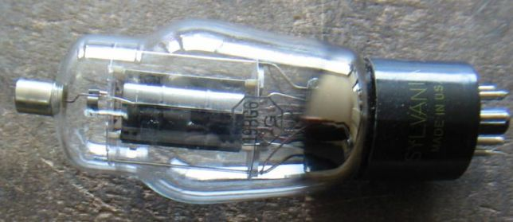
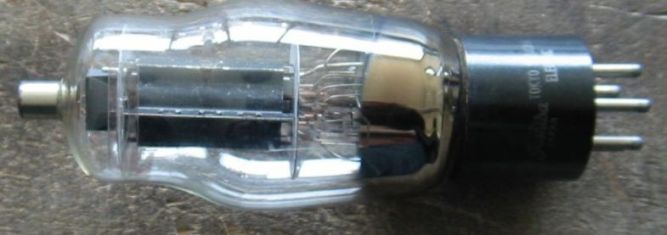
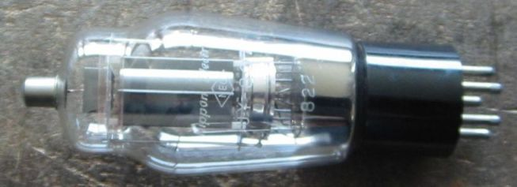
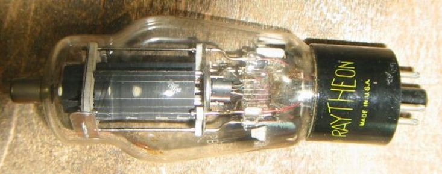
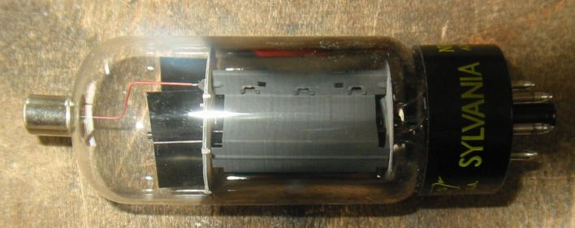
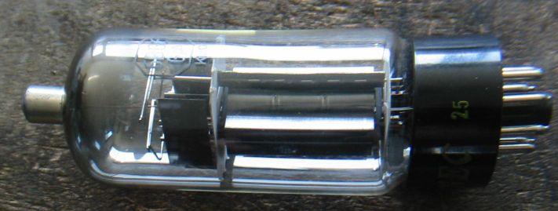
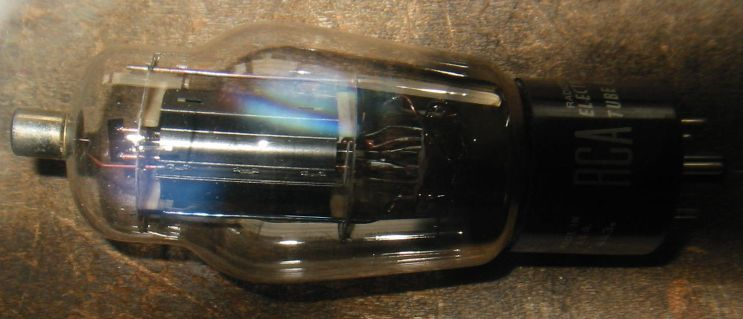
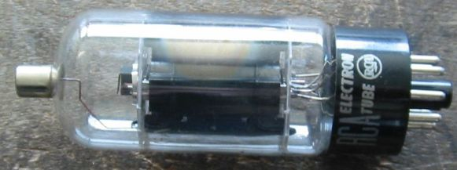

6BG6について
６BG6に初めて出会ったのは、友達のアマチュア無線用送信機の終段管としてでした。
807そっくりで、その友達は807より強いと主張していたのを今でも覚えています。
いまではオーディオ用の球として、ある程度知られているようです。
SYLVANIAの19BG6、807そっくりです。
3本の真ん中がToshiba のUY-807 アマチュア無線でお世話になった球です。プレート端子のすぐしたに、箱形の
プレートとグリッドの結合を避けるためのシールドが見えます。
その下がNECの807で、これには管のステム側にもシールドがついています。



Raytheon 6BG6G プレートとマイカの間に碍子が入っており、シールドも付いていて、807よりしっかりと
作ってある。ステム側に見えるのはG1の放熱板。

SYLVANIAの6BG6GA、プレートが6L6GCとそっくりでPp30Wという噂があります。
この話は別なページで詳しくします。

NECの6BG6GA

RCAの19BG6G

RCAの19BG6GA

TV水平出力管(G/GT)のページに戻る